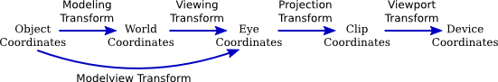

So far, our WebGPU examples have been two-dimensional, but of course the main interest in computer graphics is in rendering three-dimensional scenes. That means using 3D coordinate systems, geometric transformations, and lighting and material. We will look at all that in this section. But note that we will use only the basic OpenGL lighting model, not the more realistic physically based rendering that has become more common. The last example in the section will be a port of my simple WebGL "diskworld" hierarchical modeling example. Here is a demo of the WebGPU version:
Before we enter 3D, we need to know how to implement the depth test in WebGPU. The depth test is used to make sure that objects that lie behind other objects are actually hidden by those foreground objects. (See Subsection 3.1.4.) Unlike in OpenGL, it is not simply a matter of enabling the test. You also have to provide the depth buffer that is used to hold depth information about pixels in the image, and you have to attach that buffer to the rendering pipeline.
The sample program webgpu/depth_test.html uses the depth test in a 2D scene that draws fifty colored disks with black outlines. All of the disks are drawn before all of the outlines. The shader programs apply a different depth to each disk and to each outline to ensure that the disks and outlines are seen to follow the correct back-to-front order, even though they are not drawn in that order. See the source code for details, and note that only the parts of the source code that have to do with the depth test are commented.
The depth buffer in WebGPU is actually a kind of texture, with the same size as the image. It can be created using the device.createTexture() function:
depthTexture = device.createTexture({
size: [context.canvas.width, context.canvas.height], // size of canvas
format: "depth24plus",
usage: GPUTextureUsage.RENDER_ATTACHMENT
});
depthTexture here is a global variable, since the texture is created once, during initialization, but it will be used every time the image is drawn. The format of the texture describes the data stored for each pixel. The value used here, "depth24plus", means that the texture holds at least 24 bits of depth information per pixel. The usage means that this texture can be attached to a render pipeline.
When the pipeline is created, the depth test must be enabled in the pipeline by adding a depthStencil property to the pipeline descriptor that is used in the device.createRenderPipeline() function:
depthStencil: { // enable the depth test for this pipeline
depthWriteEnabled: true,
depthCompare: "less",
format: "depth24plus",
},
The format here should match the format that was specified when creating the texture. The values for depthWriteEnabled and depthCompare will probably be as shown. (The depth test works by comparing the depth value for a new fragment to the depth value currently stored in the depth buffer for that fragment. If the comparison is false, the new fragment is discarded. The depthCompare property specifies the comparison operator that is applied. Using "less" for that property means that the fragment is used if it has depth less than the current depth; that is, items with lower depth are considered closer to the user. In some cases, "less-equal" might be a better value for this property. Setting the depthWriteEnabled property to true means that when a new fragment passes the depth test, its depth value is written to the depth buffer. In some applications, it's necessary to apply the depth test without saving the new depth value. This is sometimes done, for example, when drawing translucent objects (see Subsection 7.4.1).)
Finally, when drawing the image, the depth buffer must be attached to the pipeline as part of the render pass descriptor:
let renderPassDescriptor = {
colorAttachments: [{
clearValue: { r: 1, g: 1, b: 1, a: 1 },
loadOp: "clear",
storeOp: "store",
view: context.getCurrentTexture().createView()
}],
depthStencilAttachment: { // Add depth buffer to the colorAttachment
view: depthTexture.createView(),
depthClearValue: 1.0,
depthLoadOp: "clear",
depthStoreOp: "store",
}
};
Note that the view in the depthStencilAttachment is a view of the depthTexture that was created previously. The depthClearValue says that the depth for every fragment will be initialized to 1.0 when the depth buffer is cleared. 1.0 is the maximum possible depth value, representing a depth that is behind anything else in the image. ("Stencil" here, by the way, refers to the stencil test, which is not covered in this textbook; memory for the stencil test is generally combined with memory for the depth test, and in WebGPU they would be part of the same texture.)
The "clear" properties in the renderPassDescriptor mean that the color and depth buffers will be filled with the clear value before anything is rendered. This is appropriate for the first render pass. But for any additional render passes, "clear" has to be changed to "load" in order to avoid erasing whatever was already drawn. For example, the sample program makes this change before the second render pass:
renderPassDescriptor.depthStencilAttachment.depthLoadOp = "load"; renderPassDescriptor.colorAttachments[0].loadOp = "load";
The sample program actually uses multisampling (Subsection 9.2.5), which requires a small change when creating the depth texture:
depthTexture = device.createTexture({
size: [context.canvas.width, context.canvas.height],
format: "depth24plus",
sampleCount: 4, // Required when multisampling is used!
usage: GPUTextureUsage.RENDER_ATTACHMENT,
});
We have been using the default WebGPU coordinate system, in which x ranges from -1.0 to 1.0 from left to right, y ranges from -1.0 to 1.0 from bottom to top, and the depth, or z-value, ranges from 0.0 to 1.0 from front to back. Points with coordinates outside these ranges are not part of the image. This coordinate system is referred to as normalized device coordinates (NDC). (OpenGL uses the term "clip coordinates" for its default coordinate system; WebGPU uses that term to refer to homogeneous coordinates, (x,y,z,w), for its default system; that is, the transformation from clip coordinates to NDC is given by mapping (x,y,z,w) to (x/w,y/w,z/w).)
Normalized device coordinates are mapped to viewport coordinates for rasterization. Viewport coordinates are pixel or device coordinates on the rectangular region that is being rendered, with (0,0) at the top left corner and each pixel having height and width equal to 1. Viewport coordinates also include the untransformed depth value between 0 and 1. When a fragment shader uses the @builtin(position) input, its values are given in viewport coordinates. Ordinarily the xy coordinates for a pixel in the fragment shader will be the center of that pixel, with half-integer coordinates such as (0.5,0.5) for the pixel in the upper left corner of the viewport. For multisampling, other points within the pixel are used.
But we want to be able to use the coordinate system of our choice when drawing. That brings in several new coordinate systems: object coordinates, the coordinate system in which vertices are originally specified; world coordinates, the arbitrary coordinate system on the scene as a whole; and eye coordinates, which represent the world from the point of view of the user, with the viewer at (0,0,0), the x-axis stretching from left to right, the y-axis pointing up, and the z-axis pointing into the screen. All of these coordinate systems and the transformations between them are discussed extensively in Section 3.3. This illustration is repeated from that section:

For WebGPU, you should identify "clip coordinates" with normalized device coordinates and "device coordinates" with viewport coordinates.
It is important to understand that only normalized device coordinates, viewport coordinates, and the viewport transformation are built into WebGPU. The other coordinate systems and transformations are implemented in code either on the JavaScript side or in the shader program.
The modeling transform and viewing transform are usually combined into a modelview transform, as shown, for reasons explained in Subsection 3.3.4. So a program generally only needs to work with the modelview and projection transforms.
There is one important transformation not shown in the diagram. Normal vectors for surfaces play an important role in lighting (Subsection 4.1.3). When an object is transformed by the modelview transformation, its normal vectors must also be transformed. The transformation for normal vectors is not the same as the modelview transformation but can be derived from it.
All of these transformations are implemented as matrices. The modelview and projection transformations are 4-by-4 matrices. The transformation matrix for normal vectors is a 3-by-3 matrix.
The sample program webgpu/Phong_lighting.html is our first example of 3D graphics in WebGPU. This program has functionality identical to the WebGL version, webgl/basic-specular-lighting-Phong.html. It displays one object at a time, illuminated by a single white light source. The user has some control over what object is shown and the material properties of the object, and the user can rotate the object by dragging on the image. The objects are defined as indexed face sets and are rendered using indexed drawing.
Various properties are provided by the JavaScript side of the program and used in the shader program. I have collected them all into a single struct in the shader program:
struct UniformData {
modelview : mat4x4f, // size 16, offset 0
projection : mat4x4f, // size 16, offset 16 (measured in 4-byte floats)
normalMatrix : mat3x3f,// size 12, offset 32
lightPosition : vec4f, // size 4, offset 44
diffuseColor : vec3f, // size 3, offset 48
specularColor : vec3f, // size 3, offset 52
specularExponent : f32 // size 1, offset 55
}
@group(0) @binding(0) var<uniform> uniformData : UniformData;
This is backed on the JavaScript side by a Float32Array, userData, of length 56, and values are written from that array into the uniform buffer that holds the struct on the GPU side. The offsets listed above for members of the struct correspond to indices in the array. For example, to set the diffuse color to red, we might say
userData.set( [1,0,0], 48 ); device.queue.writeBuffer( uniformBuffer, 4*48, uniformData, 48, 3 );
The typed array method userData.set(array,index) copies the elements of the array into userData, starting at the specified index. In the call to writeBuffer(), note that the second parameter gives the byte offset of the data in the buffer, which is four times the offset measured in floats. The fourth parameter is the starting index in the typed array of the data to be copied, and the fifth parameter gives the number of elements—not bytes—of the array to be copied. (The program is actually more organized than this example about copying the various data items from the JavaScript to the GPU side.)
In the shader program, the modelview and projection matrices are used in the vertex shader, and the other members of the struct are used in the fragment shader. (It is probably not best practice to combine data for the vertex shader and fragment shader in the same struct, as I have done here.) The inputs to the vertex shader are the 3D coordinates and the normal vector for the vertex. The vector coordinates are given in the object coordinate system. The vertex shader outputs are the position of the vertex in clip coordinates (which is a required output), the normal vector, and the position of the vertex in the eye coordinate system:
struct VertexOut {
@builtin(position) position : vec4f,
@location(0) normal : vec3f,
@location(1) eyeCoords : vec3f
}
@vertex
fn vmain( @location(0) coords: vec3f,
@location(1) normal: vec3f ) -> VertexOut {
let eyeCoords = uniformData.modelview * vec4f(coords,1);
var output : VertexOut;
output.position = uniformData.projection * eyeCoords;
output.normal = normalize(normal); // make sure it's a unit vector
output.eyeCoords = eyeCoords.xyz/eyeCoords.w; // convert to (x,y,z) coords
return output;
}
To understand this code, you need to understand the various coordinate systems and the support in WGSL for matrix and vector math. The eye coordinates of the vertex are obtained by multiplying the homogeneous object coordinate vector by the modelview matrix. This gives the homogeneous (x,y,z,w) eye coordinates, which are converted to ordinary (x,y,z) coordinates by dividing the vec3f eyeCoords.xyz by the w-coordinate, eyeCoords.w. The position output, which must be given in clip coordinates, is obtained by multiplying the eye coordinate vector by the projection matrix.
The unit normal and eye coordinate outputs from the vertex shader become inputs to the fragment shader, where they are used in the lighting calculation. (Their values for a fragment are, of course, interpolated from the vertices of the triangle that contains the fragment.) Phong lighting refers to doing lighting calculations in the fragment shader using interpolated normal vectors and the basic OpenGL lighting model (see Subsection 4.1.4 and Subsection 7.2.2). There is more about lighting in the last example in this section.
We need to work with matrices and vectors on the JavaScript side of a program. For that, it is convenient to use a JavaScript library that supports matrix and vector math. For WebGL, we used glMatrix (Subsection 7.1.2). For WebGPU, we need a different library, for several reasons. One reason is that the range for z in clip coordinates in WGSL is from 0 to 1 while in GLSL, the range is from -1 to 1. This means that projection matrices will be different in the two shading languages. A second reason is that a 3-by-3 matrix in WGSL contains 12 floats, because of alignment issues (Subsection 9.3.1), while in GLSL, a 3-by-3 matrix contains 9 floats.
In my examples, I use the wgpu-matrix library (webgpu/wgpu-matrix.js), by Gregg Tavares, which is distributed under the MIT open source license. Download and documentation links can be found on its web page, https://wgpu-matrix.org/. (Some of my examples use the smaller, "minified," version of the library, webgpu/wgpu-matrix.min.js, which is not human-readable.) I found the JavaScript files in the "dist" folder in the wgpu-matrix download.
The modelview transformation matrix can be computed on the JavaScript side by starting with the identity matrix and then multiplying by viewing and modeling transformations that are given by scaling, rotation, and translation. There are several familiar ways to construct orthographic and perspective projection matrices (see Subsection 3.3.3). All of this is easily implemented using wgpu-matrix.
In wgpu-matrix.js, the matrix and math functions are properties of objects such as wgpuMatrix.mat4, wgpuMatrix.mat3, and wgpuMatrix.vec4. Matrices and vectors are represented as Float32Arrays with the appropriate lengths. They can be created as Float32Arrays directly or by calling functions from the library; for example:
matrix4 = wgpuMatrix.mat4.create(); // a 4-by-4 matrix vector3 = wgpuMatrix.vec3.create(); // a 3-vector
These functions create arrays filled with zeros. Most matrix and vector operations produce a matrix or vector as output. In wgpu-matrix, you can usually pass an existing matrix or vector as the final parameter to a function, to receive the output. However, that parameter is optional, and the library will create a new matrix or vector for the output, if none is provided. In any case, the output is the return value of the function. For example, if modelview is the current modelview matrix, and if you want to apply a translation by [3,6,4], you can say either
wgpuMatrix.mat4.translate( modelview, [3,6,4], modelview );
or
modelview = wgpuMatrix.mat4.translate( modelview, [3,6,4] );
The first version is, of course, more efficient.
Lets look at some of the most important functions from wgpu-matrix.js. This will include all of the functions that are used in my examples. For creating a projection matrix, the most common approach is
projMatrix = gpuMatrix.mat4.perspective( fovy, aspect, near, far );
where fovy is the vertical field of view angle, given in radians, aspect is the ratio of the width of the image to its height, near is the distance of the near clipping plane from the viewer, and far is the distance of the far clipping plane. This is essentially the same as the gluPerspective() function in OpenGL (Subsection 3.3.3) except for measuring the angle in radians instead of degrees. Equivalents of glOrtho() and glFrustum() are also available in wgpu-matrix.
For the modelview matrix, it is usual to start with a viewing transformation. For that, the equivalent of gluLookAt() is convenient:
modelview = gpuMatrix.mat4.lookAt( eye, viewRef, viewUp )
The parameters are 3-vectors, which can be specified as regular JavaScript arrays. This constructs a view matrix for a viewer positioned at eye, looking in the direction of viewRef, with the vector viewUp pointing upwards in the view. Of course, a view matrix might also be created by starting with the identity matrix and applying a translation and some rotations. For example,
modelview = gpuMatrix.mat4.identity(); gpuMatrix.mat4.translate(modelview, [0,0,-10], modelview); gpuMatrix.mat4.rotateX(modelview, Math.PI/12, modelview); gpuMatrix.mat4.rotateY(modelview, Math.PI/15, modelview);
(I will note, however, that in my sample programs for this section, the view matrix actually comes the same "trackball rotator" that I used with WebGL. See Subsection 7.1.5.)
For applying modeling transformations to the modelview matrix, wgpu-matrix has the following functions, where I am including the optional final parameter and showing vector parameters as arrays:
The normal matrix, which is used to transform normal vectors, is a 3-by-3 matrix. It can be derived from the modelview matrix by taking the upper-left 3-by-3 submatrix of the 4-by-4 modelview matrix, and then taking the inverse of the transpose of that matrix. In wgpu-matrix, that can be done as follows:
normalMatrix = mat3.fromMat4(modelview); mat3.transpose(normalMatrix,normalMatrix) mat3.inverse(normalMatrix,normalMatrix);
(If the modelview matrix does not include any scaling operations, then taking the inverse and transpose is unnecessary.)
There are also functions for multiplying a vector, V, by a matrix, M. For a 4-vector and a 4-by-4 matrix:
transformedV = wgpuMatrix.vec4.transformMat4( V, M );
and similarly for a 3-vector and a 3-by-3 matrix.
Section 7.2 covered the implementation of OpenGL-style lighting and materials in WebGL, including diffuse, specular, and emissive material properties, directional and point lights, spotlights, and light attenuation. The "Diskworld 2" example at the end of that section illustrated all of these properties.
The sample program webgpu/diskworld_webgpu.html is a functionally identical port of the Diskworld 2 example to WebGPU. The vertex shader in the WebGPU version is essentially the same as that in the Phong lighting example that was discussed above. The fragment shader is essentially the same as the WebGL version, except for the syntax of variable and function declarations and some renaming of types. The JavaScript side of the program uses hierarchical modeling to create the scene (Subsection 3.2.3), with transformations implemented using the wgpu-matrix library. The basic objects, such as cylinders and spheres, are created as indexed face sets. Each object has three associated buffers: a vertex buffer containing the 3D vertex coordinates, a vertex buffer containing the normal vectors, and an index buffer. When an object is rendered, its buffers are attached to the render pipeline. The program uses the depth test (obviously!) and multisampling. It is worth looking at the source code, but I will not discuss it in detail. However, we will look briefly at how the fragment shader implements the lighting equation. The light and material properties and the normal matrix are uniform variables in the fragment shader:
struct MaterialProperties {
diffuseColor : vec4f, // alpha component becomes the alpha for the fragment
specularColor : vec3f,
emissiveColor : vec3f,
specularExponent : f32
}
struct LightProperties {
position : vec4f,
color : vec3f,
spotDirection: vec3f, // Note: only a point light can be a spotlight.
spotCosineCutoff: f32, // If <= 0, not a spotlight.
spotExponent: f32,
attenuation: f32, // Linear attenuation factor, >= 0 (point lights only).
enabled : f32 // 0.0 or 1.0 for false/true
}
@group(1) @binding(0) var<uniform> material : MaterialProperties;
@group(1) @binding(1) var<uniform> lights : array<LightProperties,4>;
@group(1) @binding(2) var<uniform> normalMatrix : mat3x3f;
All of these values are in the same uniform buffer. Note that because of alignment requirements for uniforms (Subsection 9.3.1), the light properties are at offset 256 bytes in the buffer, and the normal matrix is at offset 512. (But that's information for the JavaScript side.)
The lighting equation is implemented by the following function, which is called by the fragment shader entry point function for each enabled light:
fn lightingEquation( light: LightProperties, material: MaterialProperties,
eyeCoords: vec3f, N: vec3f, V: vec3f ) -> vec3f {
// N is normal vector, V is direction to viewer; both are unit vectors.
var L : vec3f; // unit vector pointing towards the light
var R : vec3f; // reflected light direction; reflection of -L through N
var spotFactor = 1.0; // multiplier to account for spotlight
var attenuationFactor = 1.0; // multiplier to account for light attenuation
if ( light.position.w == 0.0 ) { // Directional light.
L = normalize( light.position.xyz );
}
else { // Point light.
// Spotlights and attenuation are possible only for point lights.
L = normalize( light.position.xyz/light.position.w - eyeCoords );
if (light.spotCosineCutoff > 0.0) { // The light is a spotlight.
var D = -normalize(light.spotDirection);
var spotCosine = dot(D,L);
if (spotCosine >= light.spotCosineCutoff) {
spotFactor = pow(spotCosine, light.spotExponent);
}
else { // The point is outside the cone of light from the spotlight.
spotFactor = 0.0; // The light will add no color to the point.
}
}
if (light.attenuation > 0.0) {
var dist = distance(eyeCoords, light.position.xyz/light.position.w);
attenuationFactor = 1.0 / (1.0 + dist*light.attenuation);
}
}
if (dot(L,N) <= 0.0) { // Light does not illuminate this side.
return vec3f(0.0);
}
var reflection = dot(L,N) * light.color * material.diffuseColor.rgb;
R = -reflect(L,N);
if (dot(R,V) > 0.0) { // Add in specular reflection.
let factor = pow(dot(R,V), material.specularExponent);
reflection += factor * material.specularColor * light.color;
}
return spotFactor*attenuationFactor*reflection;
}
The return value represents the contribution of the light to the color of the fragment. It is possible that the light is actually shining on the other side of the primitive that is being rendered ("dot(L,N) <= 0.0"), in which case there is no contribution to the color. Otherwise, the contribution is computed as the sum of the diffuse and specular reflection, multiplied by factors that account for spotlights and light attenuation. If the light is not a spotlight the corresponding factor is 1.0 and has no effect on the return value. For a spotlight, the factor depends on where in the cone of the spotlight the fragment is located. The light attenuation factor used here is called "linear attenuation." It is not physically realistic but is often used because it can give better visual results than physically realistic attenuation. I encourage you to read the code, as an example of WGSL programming, and to consult Section 7.2 if you have questions about the lighting model.